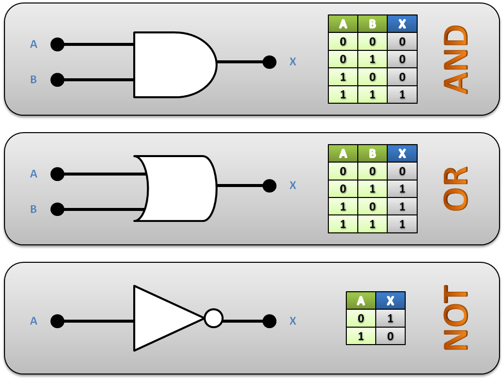

OBJETIVOS
Objetivo General
Analizar el comportamiento de las compuertas lógicas básicas mediante su construcción y simulación.
Objetivos Específicos
- Identificar las diferentes compuertas lógicas y sus símbolos
- Construir circuitos lógicos básicos utilizando compuertas
- Verificar las tablas de verdad mediante simulación y práctica
MARCO TEÓRICO
Compuerta AND
Solo da salida alta (1) cuando todas las entradas son altas (1). Representa la operación lógica de multiplicación.
Compuerta OR
Da salida alta (1) si al menos una entrada es alta (1). Representa la operación lógica de suma.
Compuerta NOT
Invierte la entrada. Si la entrada es 1, la salida es 0, y viceversa. También llamada inversor.
Símbolos de Compuertas Lógicas

Diagramas de Compuertas OR, NOT y AND
MATERIALES Y EQUIPO
Fuente de alimentación
Protoboard
Cables de conexión
LEDs
Resistencias
Chips lógicos (74LS08, 74LS32, 74LS04)
Multímetro (opcional)
PROCEDIMIENTO
Conectar la compuerta lógica en el protoboard según el circuito diseñado.
Alimentar adecuadamente el chip con la tensión correcta (generalmente 5V).
Probar las diferentes combinaciones de entradas y observar la salida con LEDs.
Registrar todos los resultados obtenidos en las tablas correspondientes.
Simular los mismos circuitos en software para verificar resultados.
Simulación en Tinkercad - Circuito 1
TABLA DE RESULTADOS COMPUERTA "OR"
| Entrada A | Entrada B | Salida Esperada | Salida Real | Observaciones |
|---|---|---|---|---|
| 0 | 0 | 0 | 0 | Funciona OK |
| 0 | 1 | 1 | 1 | Funciona OK |
| 1 | 0 | 1 | 1 | Funciona OK |
| 1 | 1 | 1 | 1 | Funciona OK |
TABLA DE RESULTADOS COMPUERTA "AND"
| Entrada A | Entrada B | Salida Esperada | Salida Real | Observaciones |
|---|---|---|---|---|
| 0 | 0 | 0 | 0 | Funciona OK |
| 0 | 1 | 0 | 0 | Funciona OK |
| 1 | 0 | 0 | 0 | Funciona OK |
| 1 | 1 | 1 | 1 | Funciona OK |
TABLA DE RESULTADOS COMPUERTA "NOT"
| Entrada | Salida Esperada | Salida Real | Observaciones |
|---|---|---|---|
| 1 | 0 | 0 | Funciona OK |
| 0 | 1 | 1 | Funciona OK |
ANÁLISIS Y DISCUSIÓN
- ¿Coincidieron los resultados reales con los esperados?
- ¿Qué errores se presentaron durante la práctica?
- ¿Qué sucede si no se conecta correctamente la alimentación del chip?
- ¿Cómo se interpreta una salida incorrecta en el circuito?
CONCLUSIONES
- Las compuertas lógicas básicas pueden implementarse fácilmente con componentes TTL
- El comportamiento real coincide con las tablas de verdad estudiadas teóricamente
- La simulación ayuda a verificar el diseño antes de construir físicamente
- Es fundamental una correcta alimentación para el funcionamiento de los chips
ANEXOS
Fotos del montaje físico
Capturas del simulador
Tablas de verdad completas
Esquemas de conexión